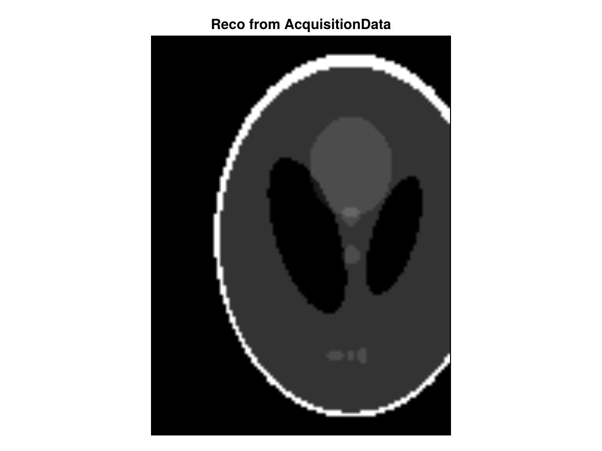
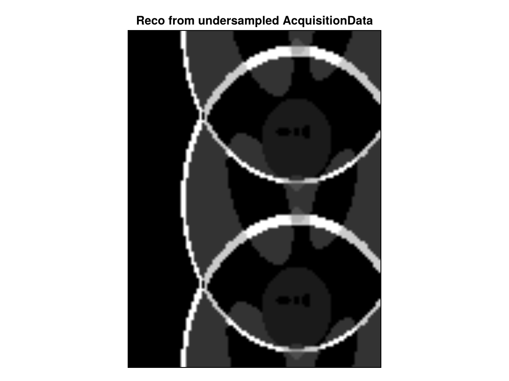

Extract Cartesian k-Space
Description
This example described how to extract kspace from cartesian datasets, undersample the data and create back and AcquisitionData structure that can be used for reconstruction.
This possibility can be easily combined with the BartIO package to reconstruct the kspace.
Setup
using CairoMakie
using ImageUtils: shepp_logan
using FFTW: ifft, ifftshift
using MRIReco, MRISimulation
using InteractiveUtils: versioninfo
function plot_im2D(im2D;title::String="")
f = Figure()
ax = Axis(f[1, 1],aspect = DataAspect(), yreversed = true, title = title)
image!(ax, im2D')
hidedecorations!(ax, grid = false)
f
endplot_im2D (generic function with 1 method)Let's create a non-square AcquisitionData structure and perform a standard reconstruction
N = 128
N2 = 9696image
x = shepp_logan(N)128×128 Matrix{Float64}:
0.0 0.0 0.0 0.0 0.0 0.0 0.0 0.0 … 0.0 0.0 0.0 0.0 0.0 0.0 0.0
0.0 0.0 0.0 0.0 0.0 0.0 0.0 0.0 0.0 0.0 0.0 0.0 0.0 0.0 0.0
0.0 0.0 0.0 0.0 0.0 0.0 0.0 0.0 0.0 0.0 0.0 0.0 0.0 0.0 0.0
0.0 0.0 0.0 0.0 0.0 0.0 0.0 0.0 0.0 0.0 0.0 0.0 0.0 0.0 0.0
0.0 0.0 0.0 0.0 0.0 0.0 0.0 0.0 0.0 0.0 0.0 0.0 0.0 0.0 0.0
0.0 0.0 0.0 0.0 0.0 0.0 0.0 0.0 … 0.0 0.0 0.0 0.0 0.0 0.0 0.0
0.0 0.0 0.0 0.0 0.0 0.0 0.0 0.0 0.0 0.0 0.0 0.0 0.0 0.0 0.0
0.0 0.0 0.0 0.0 0.0 0.0 0.0 0.0 0.0 0.0 0.0 0.0 0.0 0.0 0.0
0.0 0.0 0.0 0.0 0.0 0.0 0.0 0.0 0.0 0.0 0.0 0.0 0.0 0.0 0.0
0.0 0.0 0.0 0.0 0.0 0.0 0.0 0.0 0.0 0.0 0.0 0.0 0.0 0.0 0.0
⋮ ⋮ ⋱ ⋮
0.0 0.0 0.0 0.0 0.0 0.0 0.0 0.0 0.0 0.0 0.0 0.0 0.0 0.0 0.0
0.0 0.0 0.0 0.0 0.0 0.0 0.0 0.0 … 0.0 0.0 0.0 0.0 0.0 0.0 0.0
0.0 0.0 0.0 0.0 0.0 0.0 0.0 0.0 0.0 0.0 0.0 0.0 0.0 0.0 0.0
0.0 0.0 0.0 0.0 0.0 0.0 0.0 0.0 0.0 0.0 0.0 0.0 0.0 0.0 0.0
0.0 0.0 0.0 0.0 0.0 0.0 0.0 0.0 0.0 0.0 0.0 0.0 0.0 0.0 0.0
0.0 0.0 0.0 0.0 0.0 0.0 0.0 0.0 0.0 0.0 0.0 0.0 0.0 0.0 0.0
0.0 0.0 0.0 0.0 0.0 0.0 0.0 0.0 … 0.0 0.0 0.0 0.0 0.0 0.0 0.0
0.0 0.0 0.0 0.0 0.0 0.0 0.0 0.0 0.0 0.0 0.0 0.0 0.0 0.0 0.0
0.0 0.0 0.0 0.0 0.0 0.0 0.0 0.0 0.0 0.0 0.0 0.0 0.0 0.0 0.0simulation
params = Dict{Symbol, Any}()
params[:simulation] = "fast"
params[:trajName] = "Cartesian"
params[:numSamplingPerProfile] = N
params[:numProfiles] = floor(Int64, N2)
acqData = simulation(x[1:N,1:N2], params)
params[:reco] = "direct"
params[:reconSize] = (N,N2)
x_approx = reconstruction(acqData, params);let's show the results for first bin
plot_im2D(abs.(x_approx[:,:,1,1,1,1]),title = "Reco from AcquisitionData")
We can extract the cartesian kspace (works for 2D or 3D) with the function kDataCart
kspace = kDataCart(acqData)
size(kspace)(128, 96, 1, 1, 1, 1)Dimensions of the kspace are : kx, ky, kz, Channels, Echoes, Repetitions
Let's see a standard reconstruction with the ifft function works :
x_approx2 = ifftshift(ifft(ifftshift(kspace)))
plot_im2D(abs.(x_approx2[:,:,1,1,1,1]),title = "Reco from extracted kspace")We can create create and apply a mask on the kspace
mask = ones(eltype(kspace),size(kspace))
mask[1:2:end,:,:,:,:,:] .= 0
acq_u = AcquisitionData(kspace .* mask)
params[:reco] = "direct"
params[:reconSize] = (N,N2)
x_u = reconstruction(acq_u, params)
plot_im2D(abs.(x_u[:,:,1,1,1,1]),title = "Reco from undersampled AcquisitionData")
Reproducibility
This page was generated with the following version of Julia:
using InteractiveUtils
io = IOBuffer();
versioninfo(io);
split(String(take!(io)), '\n')12-element Vector{SubString{String}}:
"Julia Version 1.13.3"
"Commit 67ac47b9cd8 (2026-10-25 15:28 UTC)"
"Build Info:"
" Official https://julialang.org release"
"Platform Info:"
" OS: Linux (x86_64-linux-gnu)"
" CPU: 4 × AMD EPYC 9V74 80-Core Processor"
" WORD_SIZE: 64"
" LLVM: libLLVM-20.1.8 (ORCJIT, znver4)"
" GC: Built with stock GC"
"Threads: 1 default, 1 interactive, 1 GC (on 4 virtual cores)"
""And with the following package versions
import Pkg; Pkg.status()Status `~/work/MRIReco.jl/MRIReco.jl/docs/Project.toml`
[13f3f980] CairoMakie v0.15.16
[e30172f5] Documenter v1.19.0
[7a1cc6ca] FFTW v1.10.0
[cd3eb016] HTTP v2.12.3
[8ad4436d] ImageUtils v0.2.13
[98b081ad] Literate v2.21.0
[f7771a9a] MRIBase v0.4.6 `~/work/MRIReco.jl/MRIReco.jl/MRIBase`
[c57eb701] MRICoilSensitivities v0.1.5 `~/work/MRIReco.jl/MRIReco.jl/MRICoilSensitivities`
[5a6f062f] MRIFiles v0.3.2 `~/work/MRIReco.jl/MRIReco.jl/MRIFiles`
[fb1137e3] MRIOperators v0.4.3 `~/work/MRIReco.jl/MRIReco.jl/MRIOperators`
[bdf86e05] MRIReco v0.9.2 `~/work/MRIReco.jl/MRIReco.jl`
[9be66c26] MRISampling v0.1.2 `~/work/MRIReco.jl/MRIReco.jl/MRISampling`
[8988da37] MRISimulation v0.1.4 `~/work/MRIReco.jl/MRIReco.jl/MRISimulation`
[b77e0a4c] InteractiveUtils v1.11.0This page was generated using Literate.jl.